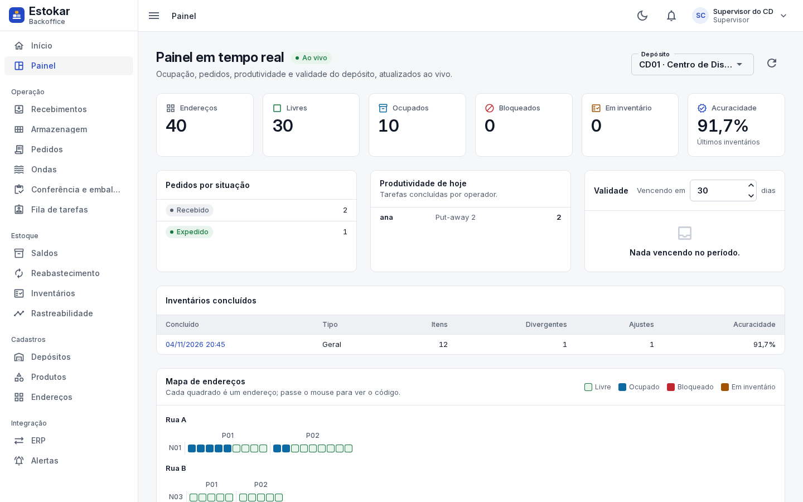
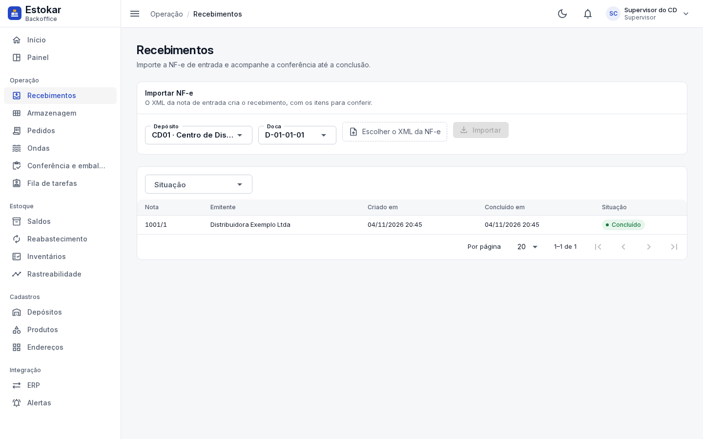
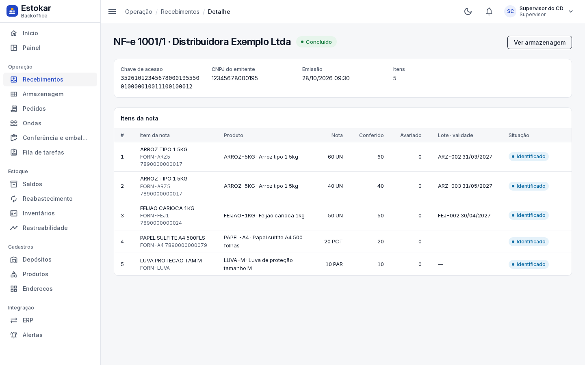
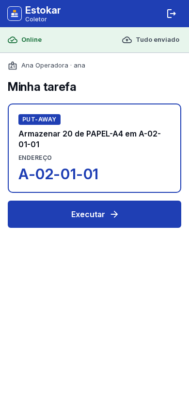
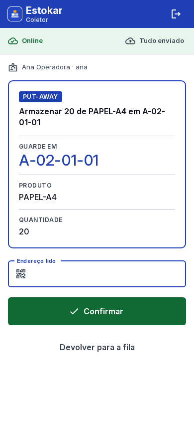
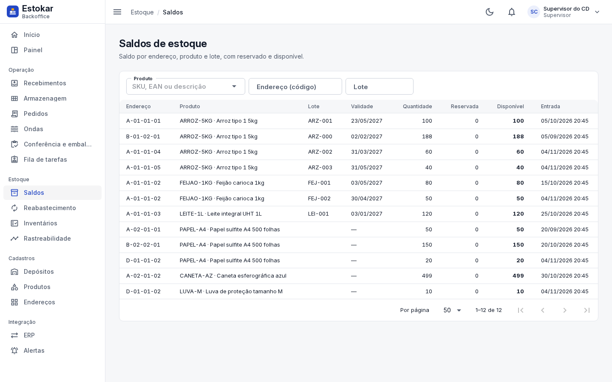
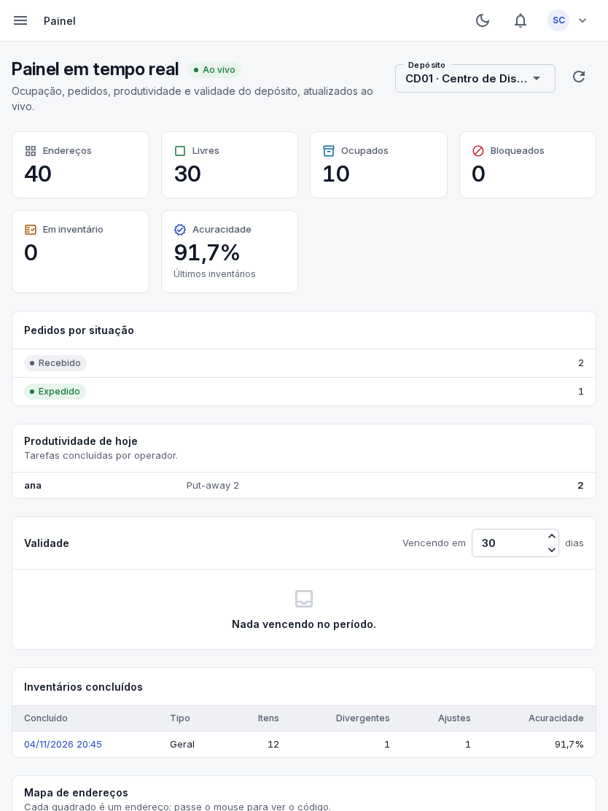

A-01-01 Warehouse Management System
Cada endereço, lote e pedido do armazém sob controle, do recebimento à expedição.
O Estokar lê a NF-e, sugere onde guardar, reserva pela validade, monta ondas com a rota de picking e mostra a operação ao vivo. O supervisor decide no backoffice; o operador executa no coletor, com ou sem rede.
O contato comercial ainda não foi configurado.

A-02 Produto
Uma operação só, num sistema só.
Recebimento, armazenagem, estoque, separação, conferência, expedição e inventário deixam de ser planilhas e conversas soltas. Cada movimento passa pelo mesmo sistema, com o mesmo saldo e o mesmo histórico.
-
01
Entrada sem digitação
A NF-e de entrada vira recebimento com os itens para conferir. O que chega com avaria ou divergência fica registrado antes de virar saldo.
-
02
Estoque que sabe onde está
Saldo por endereço, produto e lote, com reservado e disponível. O put-away é sugerido por regras com pesos que o supervisor ajusta.
-
03
Saída na ordem certa
Pedidos do ERP ou do backoffice entram em ondas, com reserva FEFO/FIFO, rota de picking, conferência por EAN, volumes e etiquetas.
A-03 Como funciona
Da nota fiscal à prateleira em cinco passos.
Sem treinamento longo nem tela cheia de campos: cada pessoa vê só o próximo passo do trabalho dela.
-

-

-

-

-
A-04 Funcionalidades
Tudo o que acontece no armazém, de ponta a ponta.
-
Recebimento por NF-e
Importa o XML, vincula itens sem GTIN ao produto, confere quantidade e avaria e conclui com as divergências registradas.
-
Gestão de estoque
Saldos por endereço e lote, reservas, transferências, ajustes, estoque mínimo e alerta de validade próxima.
-
Endereçamento
Rua, prédio, nível e posição, gerados em faixa, com docas, picking e pulmão, capacidade e bloqueio por motivo.
-
Armazenagem e put-away
Sugestão de endereço pontuada por regras com pesos configuráveis, confirmada pelo operador no coletor.
-
Separação e picking
Ondas por pedido ou em lote, agrupadas por transportadora, prioridade ou janela de corte, com a rota de picking calculada.
-
Conferência e embalagem
Conferência por EAN, faltas apontadas, volumes com peso e etiquetas de volume e endereço em PDF ou ZPL.
-
Expedição
O pedido conferido é expedido, baixa o estoque e, quando veio do ERP, volta para ele como entrega.
-
Inventário
Cíclico por curva ABC ou geral, com contagem cega, segunda contagem nas divergências, aprovação e ajuste.
-
Rastreabilidade
De um lote, produto, nota ou pedido, para frente e para trás: de onde veio, por onde passou e para quem foi.
-
Integração com ERP
Importa pedidos do SAP Business One, devolve as entregas, compara saldos e mostra as falhas para reprocessar.
-
Monitoramento operacional
Painel ao vivo com ocupação dos endereços, pedidos por situação, produtividade por operador e acuracidade.
-
Alertas e notificações
Regras por tipo de evento, como divergência de inventário, falha no ERP, estoque abaixo do mínimo e validade, por e-mail ou webhook.
-
Canais de venda e frete
Pedidos pagos do Bling, Tiny, Omie, Mercado Livre e Nuvemshop entram sozinhos; o estoque disponível volta para a loja e o frete sai no Melhor Envio.
-
Operador logístico (3PL)
Mercadoria de vários depositantes, notas do armazém geral assinadas com o certificado A1 e a cobrança da armazenagem no fim do mês.
-
Previsão de demanda
Pelas saídas de cada produto, a média por dia, a data em que o disponível acaba e quanto repor para os próximos 30 dias.
B-01 Fluxo operacional
O caminho de cada volume, sem pontos cegos.
Cada etapa só começa quando a anterior foi confirmada, e tudo fica no histórico do lote.
- RecebimentoNF-e importada
- Conferênciaquantidade e avaria
- Armazenagemput-away sugerido
- Estoquesaldo por lote
- Separaçãoonda e rota
- EmbalagemEAN e volumes
- Expediçãoentrega no ERP
B-02 Diferenciais
Feito para o chão do armazém, não para a apresentação.
- Rastreabilidade de ponta a ponta
- Cada recebimento, guarda, reserva, separação, conferência, expedição e ajuste fica ligado ao lote.
- FIFO e FEFO
- A reserva sai do lote de validade mais próxima; sem validade, do mais antigo.
- Separação por ondas
- Pedidos liberados agrupados por transportadora, prioridade ou janela de corte, por pedido ou em lote.
- Rotas de picking
- Serpentina ou vizinho mais próximo melhorado por 2-opt, partindo da doca. Com a planta do depósito desenhada na tela, a distância é a real, em metros.
- Inventário cíclico e geral
- Políticas por curva ABC, contagem cega em duas rodadas e endereço bloqueado enquanto é contado.
- Integração com ERP
- Pedidos do SAP Business One entram sozinhos; a expedição volta como entrega, com falhas visíveis e reprocessáveis.
- Painel em tempo real
- O mapa de endereços e os indicadores mudam na tela assim que a operação acontece, sem recarregar.
- Coletor offline
- Sem rede, o operador continua confirmando; a fila vai ao servidor na ordem quando a conexão volta, sem duplicar movimento.
- Instrução falada
- O coletor lê a tarefa em voz alta (endereço, produto e quantidade) e avisa o resultado: os olhos ficam no pallet.
- Assistente de IA
- Pergunte em português o que vence na semana ou quando um produto acaba. Ele só consulta, e só os dados da sua empresa.
- Arquitetura modular
- Vinte e um módulos com fronteiras próprias num único processo e num único banco, com cada empresa isolada nos próprios dados: simples de operar, organizado para crescer.
B-03 Experiência operacional
Backoffice para quem decide. Coletor para quem executa.
As imagens são telas reais do sistema, com os dados do roteiro de demonstração.


Veja a sua operação rodando no Estokar.
Mostramos o fluxo completo, do XML da NF-e à expedição, com os seus casos: lotes, validade, ondas e inventário.
O contato comercial ainda não foi configurado.